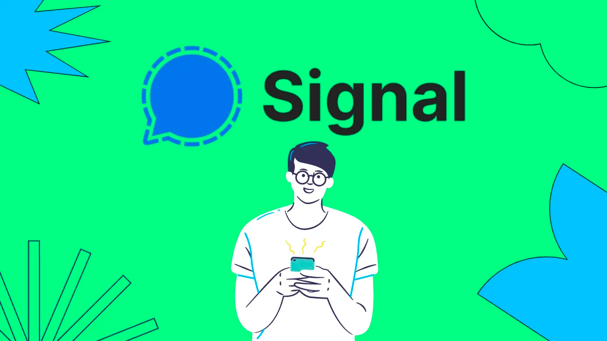

Stay Ugly for me.
O Problema com o Signal
Mesmo tendo feito isso mil vezes, acho que é hora de listar todos os problemas novamente, embora eu saiba que você não dá a mínima:
1. Você precisa de um número de telefone e ele não permanece anônimo.
Você não pode usar o Signal para conversar com estranhos que acabou de conhecer na internet, por exemplo, porque normalmente não quer e não deve dar o número do seu celular. Grupos públicos não podem ser feitos pelo mesmo motivo, até onde eu sei eles não são suportados de forma alguma. Usar o Signal em países com forte censura é extremamente perigoso, pois os usuários podem ser identificados pelo número de telefone, mesmo se o Tor for usado nas conexões.
2. É hosteado na Amazon AWS
Isso é questionável nos termos de proteção de dados, já que a Amazon é também responsável por ofertas altamente duvidosas como o Alexa, que opera uma grande rede de publicidade com base em dados pessoais. Nota do tradutor: A Amazon pode também desativar os servidores da noite pro dia, visto que tal atitude foi feita com o Parler. recentemente.
3. É hosteado nos Estados Unidos
Serviços secretos como a NSA tem acesso a tudo que estão nesses servidores. No minímo os endereços IPs podem ser monitorados pela Amazon como hoster, mesmo se o Signal manter a promessa de nunca armazenar nada. Os Estados Unidos são um dos cinco países do "Five Eyes", onde você não deveria armazenar dados privados de forma nenhuma.
4. É um jardim murado.
Você é obrigado a confiar neles como unicos operadores se quer usar o mensageiro. Como um aplicativo de mensagens, isso é ainda pior do que a maioria dos outros tipos de serviços, já que você também força todos os seus contatos a confiar neste serviço, arrastando-os assim para o "jardim murado".
5. O financiamento é questionável.
O Signal é financiado pelos fundadores do Whatsapp com o dinheiro do Facebook. Sim, exatamente o Facebook que tem cerca de uma centena de escândalos de privacidade por trás dele. Quem se lembra de Cambridge Analytica? Essa conexão certamente não cria confiança.
6. Clientes alternativos são proibidos
O próprio fundador quer ter o controle de tudo e por isso não quer que outras pessoas façam um fork do cliente e o usem com os servidores do Signal. Usar outros servidores não faz muito sentido, porque você não pode entrar em contato com os usuários do aplicativo oficial. Um fork é praticamente impossível, porque você não pode usar a sua própria versão de uma forma significativa. Clientes alternativos são urgentemente necessários, porque o cliente oficial não é um software 100% livre. Ele usa o Play Services proprietário para notificações. Por esta razão, o aplicativo não está no F-Droid - e com razão.
7. Signal é um oponente da descentralização
Em um discurso público do fundador, ele fez uma declaração depreciativa sobre os conceitos de descentralização. Isso é alarmante, porque mostra claramente que o Signal nunca será descentralizado, isso é tecnicamente possível, mas não desejado. A descentralização é essencial para manter o controle sobre seus próprios dados. Apenas se eu administrar meu próprio servidor, tenho controle total sobre onde meus dados estão e o que acontece com eles. Infelizmente, a issue no PrivacyTools para remover o Signal não foi bem-sucedida, mas ainda fornece informações muito mais extensas sobre por que o Signal é ruim, por que o Signal não deve ser confiável e por que o Signal deve ser excluído: